AED · curso 2
6. Grafos II
Escrito por Adrián Quiroga Linares.
En este tema, nos adentramos en algunos de los algoritmos fundamentales en teoría de grafos. A continuación se explican los principales conceptos y métodos para manipular y analizar grafos, en particular en contextos donde el grafo es dirigido, ponderado o acíclico.
6.1 Ordenación Topológica
Concepto de GDA (Grado Dirigido Acíclico):
Un GDA es un grafo dirigido que no contiene ciclos, es decir, no existen caminos que partan de un vértice y regresen a él mismo. En la matriz de caminos de un GDA, los valores en la diagonal siempre son ceros, indicando la ausencia de ciclos. Estos grafos son útiles para representar estructuras donde ciertos elementos deben preceder a otros, como las expresiones aritméticas o las ordenaciones parciales.
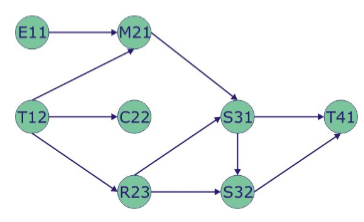
Ordenación Parcial:
Se trata de una relación que, además de no ser reflexiva (un elemento no se relaciona consigo mismo), es transitiva: si A se relaciona con B y B con C, entonces A se relaciona con C.
Definición de Ordenación Topológica:
La ordenación topológica es una disposición lineal de los vértices de un grafo dirigido acíclico, de tal forma que si existe un camino de un vértice a otro, el vértice de origen aparece antes que el de destino en el orden.
Algoritmo para la Ordenación Topológica:
- Se buscan los nodos con grado entrante cero y se colocan en una cola.
- Extraemos el vértice de la cola y lo añadimos a la ordenación.
- Eliminamos los arcos que parten del vértice procesado y recalculamos los grados entrantes de los vértices restantes.
- Repetimos hasta que la cola esté vacía.
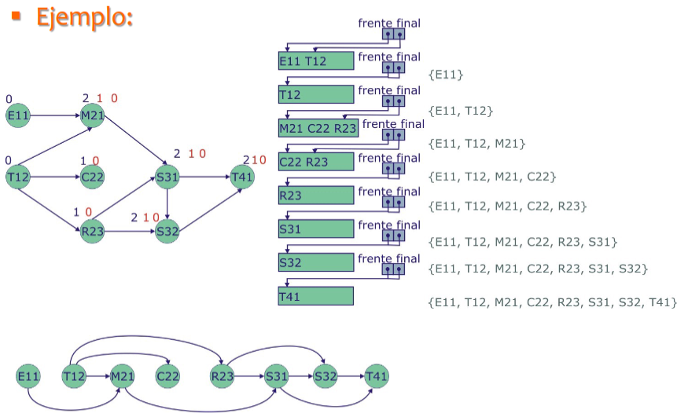
6.2 Cálculo de la Matriz de Caminos: Algoritmo de Warshall
El Algoritmo de Warshall permite calcular la matriz de caminos sin realizar multiplicaciones. Para cada iteración, la matriz de caminos se actualiza basándose en la información de la matriz anterior. La fórmula de actualización es:
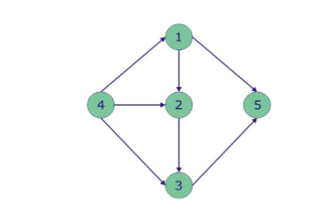
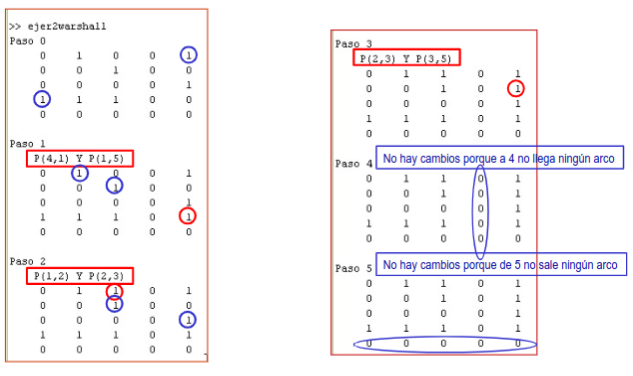
6.3 Camino Más Corto entre dos Vértices: Algoritmo de Dijkstra
El Algoritmo de Dijkstra se usa para encontrar el camino de menor longitud desde un vértice de origen hasta todos los demás vértices en un grafo ponderado. Este es un algoritmo voraz que selecciona, en cada paso, el vértice con el camino mínimo actual y ajusta los caminos de los vértices adyacentes si es necesario. Utiliza:
- C: Conjunto de vértices candidatos.
- S: Conjunto de vértices ya procesados.
- D: Vector de distancias mínimas desde el vértice origen.
- A: Matriz de pesos del grafo.
- P: Vector de predecesores inmediatos.
Para realizar el algoritmo, se parte de un vértice origen, y a partir de él se establece en
Se repiten estos pasos sobreescribiendo solo el valor de aquellos caminos que tuvieran una longitud mayor a la obtenida por medio del vértice de estudio actual. Como se ve, tiene la desventaja de que si queremos saber el camino mínimo entre cualquier par de vértices, tenemos que realizar el algoritmo partiendo de todos los vértices del grafo y luego comparar.
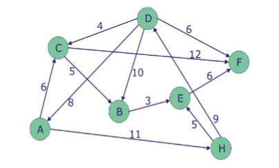
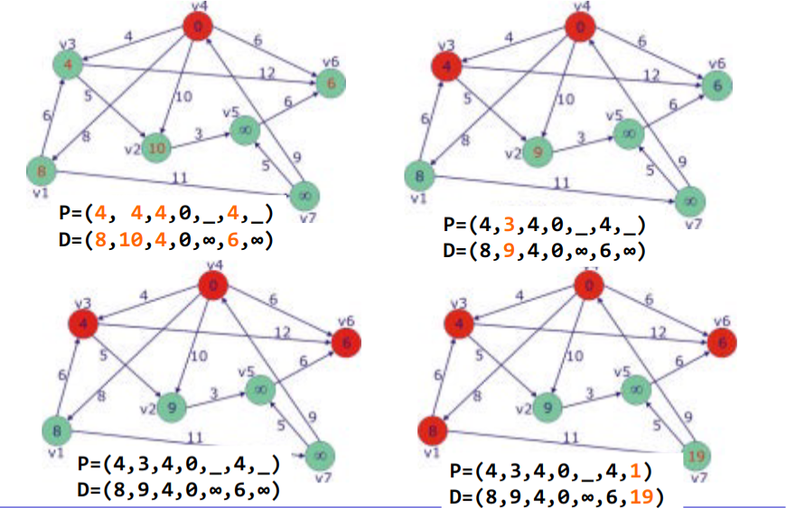
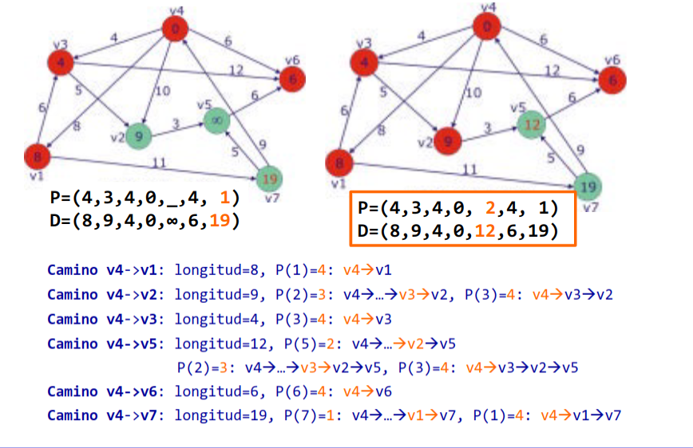
6.4 Camino más corto entre cualquier par de vértices: Algoritmo de Floyd
Para evitar el problema anterior, se implementó el algoritmo de Floyd. Este algoritmo, en vez de un vector como en el caso anterior, devuelve una matriz
En este caso:
- La matriz
muestra los caminos más cortos entre cualquier par de vértices con longitud 1. - La matriz
muestra los caminos más cortos entre cualquier par de vértices con longitud 2 o inferior, y así sucesivamente.
Por tanto, la matriz
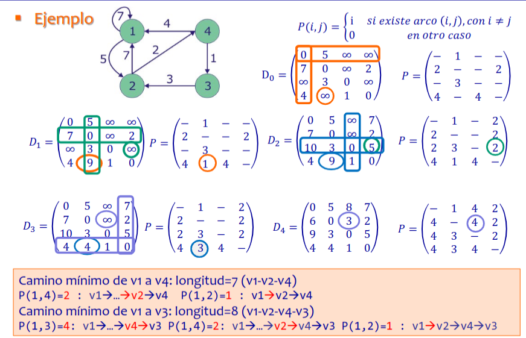
6.5 Control de flujo
El control de flujo supone la forma de controlar la cantidad de objetos o elementos que se transportan de un lugar a otro. Algunos ejemplos son:
- Flujo de mercancías entre el lugar donde se producen y donde se reciben.
- Flujo de personas que realizan un desplazamiento entre dos puntos señalados.
- Flujo de agua por medio de un sistema de tuberías.
Muchas veces, lo que se pretende es maximizar el flujo, es decir, transportar la mayor cantidad posible de elementos desde el punto de partida (fuente
Para resolver estos problemas de maximización de flujo, se emplea el Algoritmo de Ford-Fulkerson, que busca caminos entre el nodo fuente y el sumidero en los que se pueda incrementar el flujo todavía más, para obtener en el sumidero la mayor cantidad de elementos posibles.
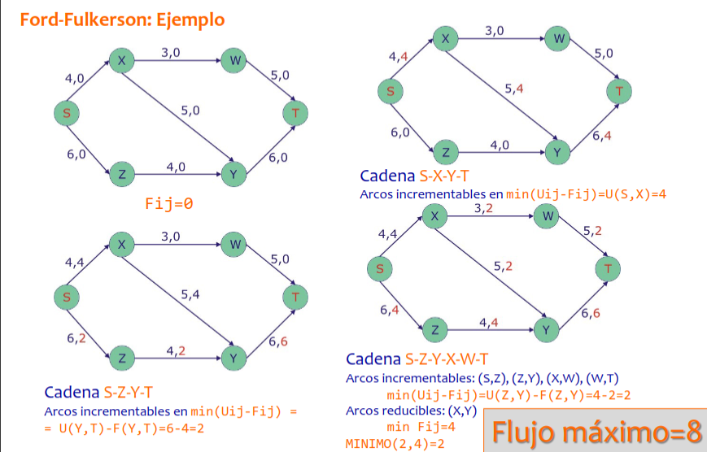
6.6 Árbol de expansión de coste mínimo
A veces, a partir de un grafo no dirigido, se pretenden modelar relaciones simétricas entre elementos. En esta situación, tenemos varias definiciones importantes:
- Red conectada: Red (grafo que representa las relaciones entre elementos) en la que desde un vértice se puede llegar a cualquier otro por medio de un camino.
- Árbol: Red que es subconjunto de la red original, siendo también una red conectada, con
nodos y vértices, y a la que, si se le añade un arco más, se forma un ciclo. - Árbol de expansión: Árbol que contiene todos los vértices de la red original.
- Árbol de expansión de coste mínimo: Árbol de expansión en el cual el peso de sus arcos suma el menor valor posible.
Buscar un árbol de expansión es una forma de saber si una red es conectada. Los árboles de expansión de coste mínimo tienen muchas aplicaciones:
- Diseño de redes de telecomunicaciones, para encontrar la forma más barata o corta de conectar todos los nodos.
- Diseño del menor número de caminos que unan todos los pueblos de una localidad de la forma más corta posible.
Para encontrar estos árboles de expansión existen dos algoritmos: el Algoritmo de Prim y el Algoritmo de Kruskal.
6.6.1 Algoritmo de Prim
Es un algoritmo voraz, ya que en cada paso se añade el arco más corto disponible al árbol (mejor solución en cada paso). Se parte de un vértice inicial y se añade el vértice adyacente cuyo arco entre ambos tenga el menor peso. A continuación, entre los vértices ya conectados, se busca el arco de menor peso que conecte sus vértices adyacentes que no hayan sido conectados todavía. Estos pasos se repiten hasta haber conectado todos los vértices.
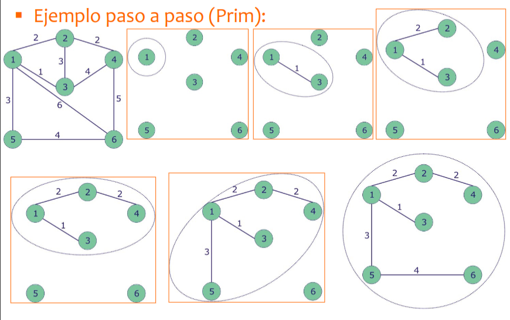
6.6.2 Algoritmo de Kruskal
Se parte del conjunto de vértices del grafo y se selecciona el arco de menor peso, uniendo dos vértices y reduciendo en uno el número de componentes conexas. A continuación, se selecciona el siguiente arco de menor peso que también conecte vértices de dos componentes conexas distintas, reduciendo otra vez el número total en uno. Si no se respetara esta condición, se producirían ciclos. El algoritmo finaliza cuando solo queda una componente conexa.
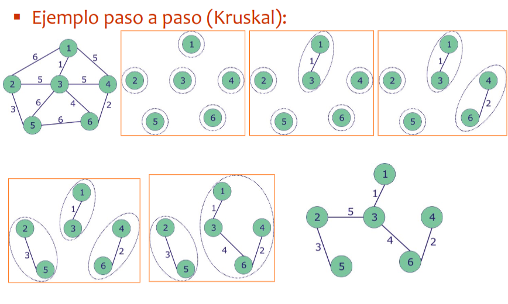